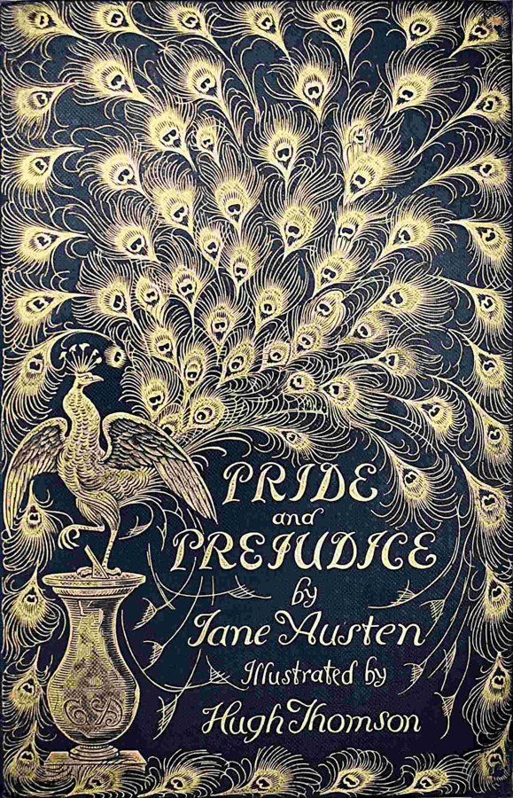

Familiar names. Extraordinary worlds. Download a book, then choose Add books in your personal library to make it yours.
Download → return to your shelf → Add books. These complete books are already converted to PDF, ready for manual download. No conversion app is needed. They are not downloaded or pre-cached when you install the app.
All ten source editions identify themselves as public domain in the United States. Copyright rules can differ elsewhere; check the rules where you live before downloading. Each file retains its original Project Gutenberg licence and credits. Read the source permissions and licence. Crediting an author alone does not grant permission for a copyrighted edition.
10 books

Romance · 1813
Pride and Prejudice
Jane Austen
A spirited novel of first impressions, family expectations and unexpected affection.
Jane Austen was an English novelist whose sharp observation of family, money and social expectations reshaped the novel of manners. Her six completed novels include Sense and Sensibility, Emma and Persuasion. Beneath the courtship plots, her wit exposes the choices available to women in her society.
Illustrations by Hugh Thomson; preface by George Saintsbury. Cover reproduced from the source edition.
Digitisation credits: Chuck Greif and the Online Distributed Proofreading Team at http://www.pgdp.net (This file was produced from images available at The Internet Archive)
Text and source cover: Project Gutenberg, eBook #1342, obtained from its official PGLAF mirror. PDF conversion and pagination: GoodReadence. Original text, illustrations, source credits and licence retained.
Public domain in the United States; Project Gutenberg licence included. Check local copyright rules.
Mary Shelley was an English novelist who brought Gothic storytelling into conversation with scientific ambition and human responsibility. Frankenstein grew out of a ghost-story challenge in 1816. She also wrote The Last Man, imagining a future transformed by catastrophe.
Source edition and cover supplied by Project Gutenberg. This is the complete text of the supplied edition, including its introductory material.
Digitisation credits: Judith Boss, Christy Phillips, Lynn Hanninen and David Meltzer. HTML version by Al Haines. Further corrections by Menno de Leeuw.
Text and source cover: Project Gutenberg, eBook #84, obtained from its official PGLAF mirror. PDF conversion and pagination: GoodReadence. Original text, illustrations, source credits and licence retained.
Public domain in the United States; Project Gutenberg licence included. Check local copyright rules.
Lewis Carroll was the pen name of Charles Lutwidge Dodgson, an English mathematician, writer and photographer. Alice’s Adventures in Wonderland and Through the Looking-Glass turn logic and language into imaginative play. His nonsense verse includes The Hunting of the Snark and Jabberwocky.
Cover reproduced from the Project Gutenberg source EPUB; the source edition’s credits and contents are retained.
Digitisation credits: Arthur DiBianca and David Widger
Text and source cover: Project Gutenberg, eBook #11, obtained from its official PGLAF mirror. PDF conversion and pagination: GoodReadence. Original text, illustrations, source credits and licence retained.
Public domain in the United States; Project Gutenberg licence included. Check local copyright rules.
Arthur Conan Doyle was a Scottish-born physician and author who created Sherlock Holmes and Dr Watson. His detective stories made close observation central to the mystery genre. Beyond Holmes, he wrote historical fiction and adventure stories, including The Lost World.
Complete collection of twelve stories. Cover reproduced from the Project Gutenberg source EPUB.
Digitisation credits: an anonymous Project Gutenberg volunteer and Jose Menendez
Text and source cover: Project Gutenberg, eBook #1661, obtained from its official PGLAF mirror. PDF conversion and pagination: GoodReadence. Original text, illustrations, source credits and licence retained.
Public domain in the United States; Project Gutenberg licence included. Check local copyright rules.
Charles Dickens was an English novelist and journalist whose memorable characters brought Victorian society to life. His stories combine humour, sympathy and criticism of poverty and injustice. His works include Oliver Twist, David Copperfield, Bleak House and Great Expectations.
All five staves of the novella. Cover reproduced from the Project Gutenberg source EPUB.
Digitisation credits: Jose Menendez and David Widger
Text and source cover: Project Gutenberg, eBook #46, obtained from its official PGLAF mirror. PDF conversion and pagination: GoodReadence. Original text, illustrations, source credits and licence retained.
Public domain in the United States; Project Gutenberg licence included. Check local copyright rules.
H. G. Wells was an English novelist and social thinker who helped establish modern science fiction. The Time Machine, The War of the Worlds and The Invisible Man explore how discoveries might unsettle human society. He also wrote social novels, history and political commentary.
Includes the complete narrative and epilogue. Cover reproduced from the Project Gutenberg source EPUB.
Digitisation credits: Project Gutenberg; individual edition credits are retained in the complete PDF.
Text and source cover: Project Gutenberg, eBook #35, obtained from its official PGLAF mirror. PDF conversion and pagination: GoodReadence. Original text, illustrations, source credits and licence retained.
Public domain in the United States; Project Gutenberg licence included. Check local copyright rules.
Oscar Wilde was an Irish writer celebrated for his wit, fairy tales and plays. The Picture of Dorian Gray is his only novel. His other works include The Importance of Being Earnest, The Happy Prince and The Ballad of Reading Gaol, spanning comedy, beauty and painful reflection.
Complete source edition with preface and twenty chapters. Cover reproduced from the Project Gutenberg source EPUB.
Digitisation credits: Judith Boss. HTML version by Al Haines.
Text and source cover: Project Gutenberg, eBook #174, obtained from its official PGLAF mirror. PDF conversion and pagination: GoodReadence. Original text, illustrations, source credits and licence retained.
Public domain in the United States; Project Gutenberg licence included. Check local copyright rules.
Charlotte Perkins Gilman was an American writer and social critic concerned with women’s independence and the conditions shaping everyday life. The Yellow Wallpaper draws on her experience of a prescribed rest cure. Her other works include Women and Economics and the utopian novel Herland.
A complete short story, so its PDF is naturally shorter than a novel. Cover reproduced from the Project Gutenberg source EPUB.
Digitisation credits: An Anonymous Volunteer and David Widger
Text and source cover: Project Gutenberg, eBook #1952, obtained from its official PGLAF mirror. PDF conversion and pagination: GoodReadence. Original text, illustrations, source credits and licence retained.
Public domain in the United States; Project Gutenberg licence included. Check local copyright rules.
Emily Dickinson was an American poet who spent most of her life in Amherst, Massachusetts. Her compact poems explore nature, death, belief and inner experience through striking imagery and unconventional rhythms. Much of her poetry appeared after her death; early editors changed some wording and punctuation.
All three series in this historical collection, not every poem Dickinson ever wrote. Early editorial conventions are preserved. Source cover supplied by Project Gutenberg.
Digitisation credits: Produced by Jim Tinsley <jtinsley@pobox.com>
Text and source cover: Project Gutenberg, eBook #12242, obtained from its official PGLAF mirror. PDF conversion and pagination: GoodReadence. Original text, illustrations, source credits and licence retained.
Public domain in the United States; Project Gutenberg licence included. Check local copyright rules.
Aesop · translated by George Fyler Townsend · Ancient Greek tradition
Aesop is the traditional name attached to a body of ancient fables, often featuring animals whose choices reveal human strengths and weaknesses. Accounts of his life mix history and legend, so many details remain uncertain. These tales travelled through generations of storytellers and translators; this edition uses George Fyler Townsend’s English translation.
English translation by George Fyler Townsend. Complete source collection, including its introduction. Cover reproduced from the Project Gutenberg source EPUB.
Digitisation credits: David Widger
Text and source cover: Project Gutenberg, eBook #21, obtained from its official PGLAF mirror. PDF conversion and pagination: GoodReadence. Original text, illustrations, source credits and licence retained.
Public domain in the United States; Project Gutenberg licence included. Check local copyright rules.